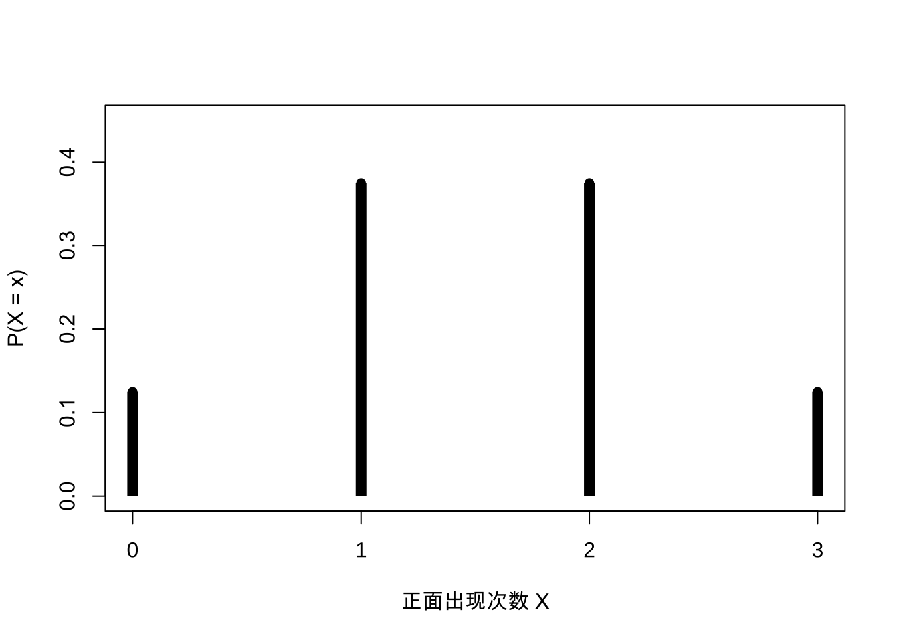
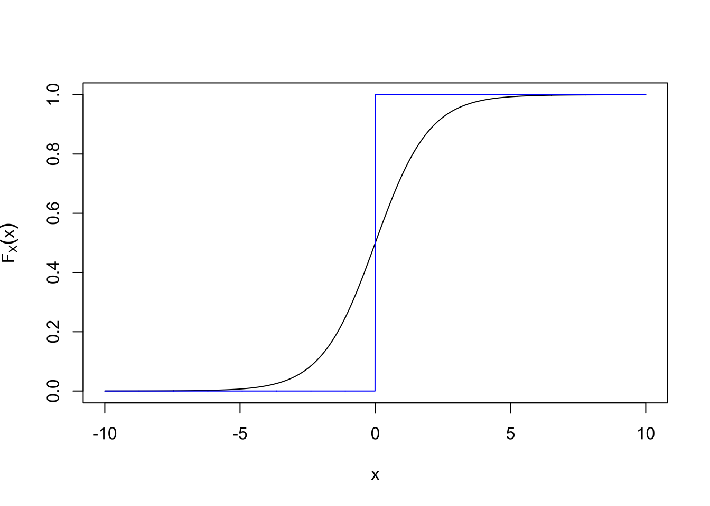
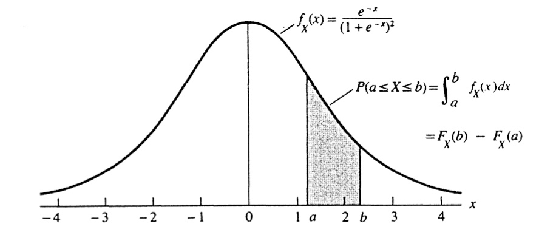

第 1 概率论基础
本章从样本空间与事件出发，建立概率空间，随后讨论条件概率、Bayes 公式、独立性、随机变量、分布函数以及概率质量函数和概率密度函数。这一顺序与原课件第 1 章保持一致。
1.1 样本空间与事件
定义 1.1 样本空间 一个试验所有可能结果组成的集合称为该试验的样本空间，记为 \(S\)。
样本空间可以是可数的，也可以是不可数的。
- 抛掷一枚硬币时，\(S=\{\mathrm{H},\mathrm{T}\}\)。
- 若把反应时间记录到最接近的整数秒，则 \(S=\{0,1,2,\ldots\}\)。
- 若反应时间连续记录，则可取 \(S=(0,\infty)\)。
定义 1.2 事件 样本空间 \(S\) 的任意子集称为一个事件，其中包括 \(S\) 本身。若试验结果属于事件 \(A\)，就称事件 \(A\) 发生。
对事件 \(A,B\subseteq S\)，包含与相等可写为
\[ A\subseteq B\iff (x\in A\Rightarrow x\in B), \]
\[ A=B\iff A\subseteq B\ \text{且}\ B\subseteq A. \]
1.1.1 集合运算
并、交和补分别定义为
\[ A\cup B=\{x:x\in A\ \text{或}\ x\in B\}, \]
\[ A\cap B=\{x:x\in A\ \text{且}\ x\in B\}, \]
\[ A^{\mathrm c}=\{x:x\notin A\}. \]
对集合序列 \(A_1,A_2,\ldots\)，这些运算可推广为
\[ \bigcup_{i=1}^{\infty}A_i =\{x\in S:x\in A_i\ \text{对某个}\ i\ \text{成立}\}, \]
\[ \bigcap_{i=1}^{\infty}A_i =\{x\in S:x\in A_i\ \text{对所有}\ i\ \text{成立}\}. \]
例 1.1 无限并与无限交 令 \(S=(0,1]\)，并定义 \(A_i=[1/i,1]\)。则
\[ \bigcup_{i=1}^{\infty}A_i=(0,1], \qquad \bigcap_{i=1}^{\infty}A_i=\{1\}. \]
1.1.2 互斥事件与划分
定义 1.3 互斥 若 \(A\cap B=\varnothing\)，则称事件 \(A\) 与 \(B\) 互斥。若对任意 \(i\ne j\) 都有 \(A_i\cap A_j=\varnothing\)，则称 \(A_1,A_2,\ldots\) 两两互斥。
集合 \(A_i=[i,i+1)\)（\(i=0,1,2,\ldots\)）两两互斥，而且
\[ \bigcup_{i=0}^{\infty}A_i=[0,\infty). \]
定义 1.4 划分 若 \(A_1,A_2,\ldots\) 两两互斥，并且 \(\bigcup_{i=1}^{\infty}A_i=S\)，则称这些集合构成样本空间 \(S\) 的一个划分。
划分把样本空间分成互不重叠的部分，是后续全概率公式和 Bayes 公式的基础。
1.2 \(\sigma\)-代数与概率测度
定义 1.5 \(\sigma\)-代数 样本空间 \(S\) 的一族子集 \(\mathcal B\) 若满足以下条件，就称为 \(S\) 上的一个 \(\sigma\)-代数：
- \(\varnothing\in\mathcal B\)；
- 若 \(A\in\mathcal B\)，则 \(A^{\mathrm c}\in\mathcal B\)；
- 若 \(A_1,A_2,\ldots\in\mathcal B\)，则 \(\bigcup_{i=1}^{\infty}A_i\in\mathcal B\)。
由 \(S=\varnothing^{\mathrm c}\) 可知 \(S\in\mathcal B\)。结合 De Morgan 律，\(\mathcal B\) 也对可数交封闭：
\[ \left(\bigcup_{i=1}^{\infty}A_i^{\mathrm c}\right)^{\mathrm c} =\bigcap_{i=1}^{\infty}A_i\in\mathcal B. \]
例 1.2 有限样本空间 若 \(S=\{1,2,3\}\)，可取 \(\mathcal B\) 为 \(S\) 的幂集：
\[ \mathcal B= \{\varnothing,\{1\},\{2\},\{3\},\{1,2\},\{1,3\},\{2,3\},\{1,2,3\}\}. \]
这里共有 \(2^3=8\) 个集合。一般地，含 \(n\) 个元素的有限集合有 \(2^n\) 个子集。
例 1.3 实直线上的 Borel 集 当 \(S=\mathbb R\) 时，通常要求 \(\mathcal B\) 包含所有区间 \([a,b]\)、\((a,b]\)、\((a,b)\)、\([a,b)\)，以及由这些集合经过可数次并、交和取补得到的集合。
定义 1.6 概率函数 给定样本空间 \(S\) 及其上的 \(\sigma\)-代数 \(\mathcal B\)，若函数 \(P:\mathcal B\to[0,1]\) 满足
- 对所有 \(A\in\mathcal B\)，\(P(A)\ge 0\)；
- \(P(S)=1\)；
- 若 \(A_1,A_2,\ldots\) 两两互斥，则
\[ P\left(\bigcup_{i=1}^{\infty}A_i\right) =\sum_{i=1}^{\infty}P(A_i), \]
则称 \(P\) 为概率函数。这三条性质称为 Kolmogorov 公理。
定理 1.1 离散样本空间上的概率 设 \(S=\{s_1,\ldots,s_n\}\)，并给定非负数 \(p_1,\ldots,p_n\)，使得 \(\sum_{i=1}^n p_i=1\)。定义
\[ P(A)=\sum_{\{i:s_i\in A\}}p_i, \]
则 \(P\) 是 \(S\) 上的概率函数。该结论同样适用于可数样本空间 \(S=\{s_1,s_2,\ldots\}\)。
展开证明
由 \(p_i\ge0\)，对任意事件 \(A\) 都有
\[ P(A)=\sum_{\{i:s_i\in A\}}p_i\ge0. \]
把 \(A\) 取为整个样本空间，便得到
\[ P(S)=\sum_i p_i=1. \]
最后，设 \(A_1,A_2,\ldots\) 两两互斥。由于每个样本点 \(s_i\) 至多属于其中一个 \(A_j\)，对并集求和时每个 \(p_i\) 恰好在它所属的那一个事件中出现一次。因此
\[ \begin{aligned} P\left(\bigcup_{j=1}^{\infty}A_j\right) &=\sum_{\{i:s_i\in\cup_jA_j\}}p_i\\ &=\sum_{j=1}^{\infty}\sum_{\{i:s_i\in A_j\}}p_i\\ &=\sum_{j=1}^{\infty}P(A_j). \end{aligned} \]
三个 Kolmogorov 公理均成立，所以 \(P\) 是概率函数。可数样本空间的论证相同。
1.3 条件概率与 Bayes 公式
定义 1.7 条件概率 在概率空间 \((S,\mathcal B,P)\) 中，若 \(B\in\mathcal B\) 且 \(P(B)>0\)，则
\[ P(A\mid B)=\frac{P(A\cap B)}{P(B)},\qquad A\in\mathcal B. \]
条件概率的定义立即给出乘法公式
\[ P(A\cap B)=P(A\mid B)P(B). \]
练习 1.1 原课件 Problem 1.41（课件编号） 证明 \(P(\cdot\mid B):\mathcal B\to\mathbb R\) 满足 Kolmogorov 公理。
查看提示
固定 \(B\) 且 \(P(B)>0\)。分别检查非负性、\(P(S\mid B)=1\)，以及对两两互斥的 \(A_1,A_2,\ldots\) 检查可数可加性；第三步要用到交运算对并运算的分配律。
查看详细解答
记 \(Q(A)=P(A\mid B)=P(A\cap B)/P(B)\)。因为 \(P(B)>0\)：
- 对任意 \(A\in\mathcal B\)，\(P(A\cap B)\ge0\)，故 \(Q(A)\ge0\)；
- \(Q(S)=P(S\cap B)/P(B)=P(B)/P(B)=1\)；
- 若 \(A_1,A_2,\ldots\) 两两互斥，则 \(A_1\cap B,A_2\cap B,\ldots\) 仍两两互斥，而且
\[ \left(\bigcup_{i=1}^{\infty}A_i\right)\cap B =\bigcup_{i=1}^{\infty}(A_i\cap B). \]
于是由 \(P\) 的可数可加性，
\[ \begin{aligned} Q\left(\bigcup_{i=1}^{\infty}A_i\right) &=\frac{P\left(\bigcup_i(A_i\cap B)\right)}{P(B)}\\ &=\frac{\sum_iP(A_i\cap B)}{P(B)} =\sum_iQ(A_i). \end{aligned} \]
所以 \(P(\cdot\mid B)\) 满足 Kolmogorov 公理。
例 1.4 连续抽到四张 A 从一副充分洗匀的 52 张扑克牌顶部依次发出四张牌。已知前 \(i\) 张都是 A，求四张牌全为 A 的条件概率，其中 \(i=1,2,3\)。
最终结果为
\[ P(\text{四张均为 A}\mid\text{前 }i\text{ 张均为 A}) =\frac{\binom{52}{i}} {\binom{4}{i}\binom{52}{4}}. \]
当 \(i=1,2,3\) 时，数值约为 \(0.000048\)、\(0.00082\) 和 \(0.02041\)。第一个数值与原课件中的小数存在一位数量级差异，已记录在迁移说明中。
查看详细解答
设 \(E_i\) 表示“前 \(i\) 张都是 A”，\(E_4\) 表示“四张都是 A”。因为 \(E_4\subseteq E_i\)，
\[ P(E_4\mid E_i)=\frac{P(E_4)}{P(E_i)}. \]
在所有等可能的 \(i\) 张牌组合中，
\[ P(E_i)=\frac{\binom4i}{\binom{52}i}, \qquad P(E_4)=\frac1{\binom{52}4}. \]
相除即得正文公式。也可以在已知前 \(i\) 张为 A 后，从剩余 \(52-i\) 张中补齐其余 \(4-i\) 张 A：
\[ P(E_4\mid E_i) =\prod_{r=i}^{3}\frac{4-r}{52-r} =\frac1{\binom{52-i}{4-i}}. \]
两种写法完全等价。
教材例 1.3.4：三名死囚 A、B、C 三名囚犯中有一人将获赦，三人的先验获赦概率均为 \(1/3\)。A 问狱卒：“B 和 C 中谁将被处决？”狱卒知道最终决定，并遵守规则：若 A 获赦，就在 B、C 中等概率说出一人；若 B 获赦，就必须说 C；若 C 获赦，就必须说 B。狱卒回答“B 将被处决”。求 A 获赦的条件概率。
最终结论仍为 \(P(A\text{ 获赦}\mid\text{狱卒说 B})=1/3\)，并不是 \(1/2\)。
查看详细解答
记 \(A,B,C\) 分别表示相应囚犯获赦，记 \(W\) 表示狱卒说“B 将被处决”。由题设，
\[ P(W\mid A)=\frac12, \qquad P(W\mid B)=0, \qquad P(W\mid C)=1. \]
用全概率公式，
\[ P(W)=\frac12\cdot\frac13+0\cdot\frac13+1\cdot\frac13 =\frac12. \]
同时
\[ P(A\cap W)=P(W\mid A)P(A)=\frac12\cdot\frac13=\frac16. \]
所以
\[ P(A\mid W)=\frac{P(A\cap W)}{P(W)} =\frac{1/6}{1/2}=\frac13. \]
狱卒的回答方式不是在 B、C 之间无条件等概率选择，因此不能把剩下的两人简单看成各有 \(1/2\) 的获赦概率。
定理 1.2 Bayes 公式 若 \(A_1,A_2,\ldots\) 构成样本空间的一个划分，则
\[ P(A_i\mid B)= \frac{P(B\mid A_i)P(A_i)} {\sum_{j=1}^{\infty}P(B\mid A_j)P(A_j)}. \]
展开证明
由条件概率和乘法公式，
\[ P(A_i\mid B)=\frac{P(A_i\cap B)}{P(B)} =\frac{P(B\mid A_i)P(A_i)}{P(B)}. \]
由于 \(A_1,A_2,\ldots\) 构成划分，事件 \(B\) 可写成两两互斥并
\[ B=\bigcup_{j=1}^{\infty}(B\cap A_j). \]
因此
\[ P(B)=\sum_{j=1}^{\infty}P(B\cap A_j) =\sum_{j=1}^{\infty}P(B\mid A_j)P(A_j). \]
代回第一式即得 Bayes 公式。
例 1.5 编码信息传输 已知发送点号和划号的概率分别为
\[ P(\text{发送点号})=\frac37, \qquad P(\text{发送划号})=\frac47, \]
并且两种误传概率均为 \(1/8\)。收到点号后，实际发送点号的概率为 \(21/25\)。
查看详细解答
记 \(D\) 为“发送点号”，\(R\) 为“收到点号”。正确传输点号的概率为 \(P(R\mid D)=7/8\)；误把划号收成点号的概率为 \(P(R\mid D^{\mathrm c})=1/8\)。由 Bayes 公式，
\[ \begin{aligned} P(\text{发送点号}\mid\text{收到点号}) &=\frac{(7/8)(3/7)}{(7/8)(3/7)+(1/8)(4/7)}\\ &=\frac{21}{25}. \end{aligned} \]
分母 \((7/8)(3/7)+(1/8)(4/7)\) 是收到点号的总概率；分子只保留“确实发送点号且收到点号”这一条路径。
1.4 独立性
定义 1.8 两个事件独立 若
\[ P(A\cap B)=P(A)P(B), \]
则称事件 \(A\) 与 \(B\) 独立。当 \(P(B)>0\) 时，这等价于 \(P(A\mid B)=P(A)\)。
例 1.6 四次掷骰至少出现一个 6 若连续投掷相互独立，则所求概率约为 \(0.518\)。
查看详细解答
直接枚举“至少一次”较繁琐，改算补事件“四次都没有 6”。每次不出现 6 的概率为 \(5/6\)，独立性给出
\[ \begin{aligned} P(\text{四次中至少出现一个 6}) &=1-P(\text{四次均不出现 6})\\ &=1-\left(\frac56\right)^4\\ &\approx0.518. \end{aligned} \]
原课件在此处列出“生日问题”作为后续示例，但未给出计算过程，本阶段保留主题而不补写新内容。
定理 1.3 补事件的独立性 若 \(A\) 与 \(B\) 独立，则以下三对事件也分别独立：\(A\) 与 \(B^{\mathrm c}\)、\(A^{\mathrm c}\) 与 \(B\)、\(A^{\mathrm c}\) 与 \(B^{\mathrm c}\)。
展开证明
由 \(A=(A\cap B)\cup(A\cap B^{\mathrm c})\) 且两部分互斥，
\[ \begin{aligned} P(A\cap B^{\mathrm c}) &=P(A)-P(A\cap B)\\ &=P(A)-P(A)P(B)\\ &=P(A)\{1-P(B)\}=P(A)P(B^{\mathrm c}), \end{aligned} \]
所以 \(A\) 与 \(B^{\mathrm c}\) 独立。交换 \(A,B\) 的角色，同理得 \(A^{\mathrm c}\) 与 \(B\) 独立。再把已经证明独立的一对 \(A\)、\(B^{\mathrm c}\) 中的 \(A\) 换成其补事件，便有 \(A^{\mathrm c}\) 与 \(B^{\mathrm c}\) 独立。
1.4.1 两两独立与相互独立
例 1.7 两个骰子 令 \(A\) 表示出现对子，\(B\) 表示点数和在 7 到 10 之间，\(C\) 表示点数和为 2、7 或 8。三事件交集恰好满足乘法关系，但它们并非两两独立。
查看详细解答
两个骰子的 36 个有序结果等可能。事件 \(A\) 有 6 个对子；点数和为 7、8、9、10 的结果数依次是 \(6,5,4,3\)；点数和为 2、7、8 的结果数是 \(1+6+5\)。所以
\[ P(A)=\frac16,\qquad P(B)=\frac12,\qquad P(C)=\frac13, \]
以及
\[ P(A\cap B\cap C)=\frac1{36}=P(A)P(B)P(C). \]
但 \(P(A\cap B)\ne P(A)P(B)\)，且 \(P(B\cap C)\ne P(B)P(C)\)。因此只验证三者交集的乘法关系，不足以推出两两独立。
具体地，\(A\cap B=\{(4,4),(5,5)\}\)，所以
\[ P(A\cap B)=\frac2{36}\ne\frac1{12}=P(A)P(B), \]
而 \(B\cap C\) 对应点数和为 7 或 8，共 \(6+5=11\) 个结果，故
\[ P(B\cap C)=\frac{11}{36}\ne\frac16=P(B)P(C). \]
三重交集只有 \((4,4)\)，所以其概率恰为 \(1/36\)；这一条等式不能替代所有子集都要检查的相互独立定义。
反过来，两两独立也未必能推出三个事件相互独立。原课件使用九个等概率三元组构造事件 \(A_i\)，使得
\[ P(A_i)=\frac13, \qquad P(A_i\cap A_j)=\frac19\quad(i\ne j), \]
但
\[ P(A_1\cap A_2\cap A_3)=\frac19 \ne P(A_1)P(A_2)P(A_3). \]
定义 1.9 相互独立 事件 \(A_1,\ldots,A_n\) 相互独立，是指对任意子集 \(\{i_1,\ldots,i_k\}\)，都有
\[ P\left(\bigcap_{j=1}^{k}A_{i_j}\right) =\prod_{j=1}^{k}P(A_{i_j}). \]
原课件进一步通过无限二进制序列构造一列相互独立、概率均为 \(1/2\) 的事件 \(B_1,B_2,\ldots\)。对任意 \(1\le i_1<\cdots<i_k\)，有
\[ P(B_{i_1}\cap\cdots\cap B_{i_k}) =\frac1{2^k} =\prod_{j=1}^{k}P(B_{i_j}). \]
这一构造说明足够丰富的概率空间可以容纳无限多个相互独立事件。
1.5 随机变量
定义 1.10 随机变量 设 \((S,\mathcal B)\) 为可测空间。若函数 \(X:S\to\mathbb R\) 满足：对任意实数 \(a\)，
\[ X^{-1}(( -\infty,a])\in\mathcal B, \]
则称 \(X\) 为实值随机变量。
若 \(S=\{s_1,\ldots,s_n\}\)，随机变量 \(X\) 的取值集合为 \(\mathcal X=\{x_1,\ldots,x_m\}\)，则 \(X\) 在 \(\mathcal X\) 上诱导的概率为
\[ P_X(X=x_i)=P\bigl(\{s_j\in S:X(s_j)=x_i\}\bigr). \]
在有限离散样本空间上，任意实值函数都是随机变量。
例 1.8 三次抛硬币 连续抛掷一枚公平硬币三次，以 \(X\) 表示正面出现次数：
| \(s\) | HHH | HHT | HTH | THH | TTH | THT | HTT | TTT |
|---|---|---|---|---|---|---|---|---|
| \(X(s)\) | 3 | 2 | 2 | 2 | 1 | 1 | 1 | 0 |
于是 \(\mathcal X=\{0,1,2,3\}\)，并且
| \(x\) | 0 | 1 | 2 | 3 |
|---|---|---|---|---|
| \(P(X=x)\) | \(1/8\) | \(3/8\) | \(3/8\) | \(1/8\) |
下面的代码来自原项目对应的 R Markdown 示例，用相同的八个样本点检查概率质量分布。
# 使用原课件列出的八个等可能样本点及其正面次数。
heads_tails <- data.frame(
outcome = c("HHH", "HHT", "HTH", "THH", "TTH", "THT", "HTT", "TTT"),
X = c(3, 2, 2, 2, 1, 1, 1, 0)
)
# 每个样本点的概率均为 1/8；按 X 分组后得到各取值的概率。
pmf <- aggregate(
rep(1 / 8, nrow(heads_tails)),
by = list(X = heads_tails$X),
FUN = sum
)
names(pmf)[2] <- "probability"
# 输出概率表，并绘制与原课件表格相对应的概率质量图。
pmf## X probability
## 1 0 0.125
## 2 1 0.375
## 3 2 0.375
## 4 3 0.125plot(
pmf$X,
pmf$probability,
type = "h",
lwd = 8,
lend = "butt",
xlab = "正面出现次数 X",
ylab = "P(X = x)",
xaxt = "n",
ylim = c(0, 0.45),
family = course_plot_family()
)
axis(1, at = 0:3)
points(pmf$X, pmf$probability, pch = 16)
图 1.1: 三次抛硬币时正面次数的经验概率质量图
1.6 分布函数
定义 1.11 累积分布函数 随机变量 \(X\) 的累积分布函数（cdf）定义为
\[ F_X(x)=P(X\le x),\qquad x\in\mathbb R. \]
在例 1.8 中，
| \(x\) 的范围 | \(F_X(x)\) |
|---|---|
| \((-\infty,0)\) | \(0\) |
| \([0,1)\) | \(1/8\) |
| \([1,2)\) | \(1/2\) |
| \([2,3)\) | \(7/8\) |
| \([3,\infty)\) | \(1\) |
定理 1.4 cdf 的刻画 函数 \(F\) 是某个随机变量的 cdf，当且仅当：
- \(\lim_{x\to-\infty}F(x)=0\) 且 \(\lim_{x\to\infty}F(x)=1\)；
- \(F\) 单调不减；
- \(F\) 右连续，即对任意 \(x_0\)，\(\lim_{x\downarrow x_0}F(x)=F(x_0)\)。
查看推导过程
必要性可直接由概率性质得到。因为 \(F(x)=P(X\le x)\)：当 \(x\to-\infty\) 时事件 \(\{X\le x\}\) 递减到空集，当 \(x\to\infty\) 时递增到整个样本空间，故两个极限分别为 0 和 1。若 \(x_1<x_2\)，则 \(\{X\le x_1\}\subseteq\{X\le x_2\}\)，所以 \(F(x_1)\le F(x_2)\)。若 \(x_n\downarrow x_0\)，则事件 \(\{X\le x_n\}\) 递减到 \(\{X\le x_0\}\)，由概率的上连续性得 \(F(x_n)\to F(x_0)\)。
反方向——由满足三条性质的函数构造一个概率空间及随机变量——需要测度扩张理论。教材在定理 1.5.3 中只给出上述证明提纲，并明确省略充分性的技术证明，因此这里不补写教材未提供的完整证明。
Logistic 分布的 cdf
\[ F_X(x)=\frac{1}{1+e^{-x}} \]
满足上述三个条件。下面把原 chap-1.R 的绘图代码改写为 knitr 代码块；只移除了手工图形设备管理，函数和绘图含义保持不变。
# 定义原脚本中的 Logistic 累积分布函数。
logistic_cdf <- function(x) {
1 / (1 + exp(-x))
}
# 定义原脚本用于比较的阶跃函数：x < 0 时为 0，否则为 1。
step_reference <- function(x) {
as.numeric(x >= 0)
}
# 在与原脚本相同的区间和步长上计算并绘图。
x <- seq(-10, 10, by = 0.01)
plot(
x,
logistic_cdf(x),
type = "l",
xlab = "x",
ylab = expression(F[X](x)),
family = course_plot_family()
)
lines(x, step_reference(x), col = "blue")
图 1.2: Logistic 累积分布函数与原课件中的阶跃参照线
1.7 概率质量函数与概率密度函数
定义 1.12 概率质量函数 离散随机变量 \(X\) 的概率质量函数（pmf）为
\[ f_X(x)=P(X=x). \]
定义 1.13 概率密度函数 连续随机变量 \(X\) 的概率密度函数（pdf）是满足
\[ F_X(x)=\int_{-\infty}^{x}f_X(t)\,\mathrm dt \]
的函数 \(f_X\)。
对 Logistic 分布，
\[ f_X(x)=\frac{\mathrm d}{\mathrm dx}F_X(x) =\frac{e^{-x}}{(1+e^{-x})^2} =F_X(x)\{1-F_X(x)\}. \]
因此区间概率既可以由 cdf 的差得到，也可以由密度积分得到：
\[ \begin{aligned} P(a<X<b) &=F_X(b)-F_X(a)\\ &=\int_a^b f_X(x)\,\mathrm dx. \end{aligned} \]

图 1.3: Logistic 密度曲线下的区间概率。来源：原课件第 1 章配图。